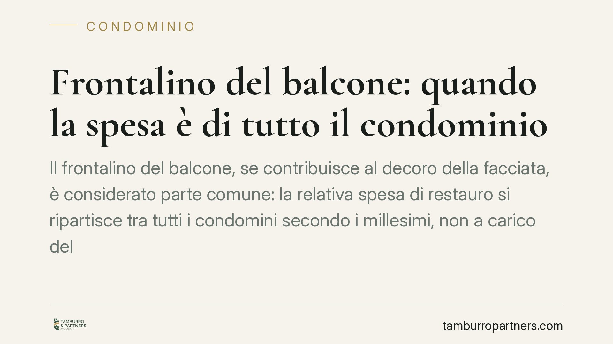

Frontalino del balcone: quando la spesa è di tutto il condominio
Il frontalino del balcone, se contribuisce al decoro della facciata, è considerato parte comune: la relativa spesa di restauro si ripartisce tra tutti i condomini secondo i millesimi, non a carico del solo proprietario dell'unità. Un principio consolidato in giurisprudenza, che incide sulle delibere assembleari e sui poteri di intervento dell'amministratore in caso di urgenza.

Il caso
I balconi aggettanti — quelli che sporgono dalla facciata — pongono da sempre un problema di confini tra proprietà individuale e parti comuni. La superficie calpestabile e il parapetto che delimitano lo spazio a uso del singolo appartamento appartengono al proprietario dell'unità. Diverso è il discorso per gli elementi che si inseriscono nel prospetto dell'edificio.
Il frontalino è la fascia frontale e verticale che riveste il bordo esterno della soletta. Quando questo elemento non assolve una funzione meramente privata, ma concorre a definire l'aspetto estetico della facciata, la giurisprudenza lo qualifica come parte comune. La conseguenza pratica è rilevante: la spesa per il suo restauro grava su tutti i condomini, indipendentemente da responsabilità individuali per il degrado.
Inquadramento normativo
Il punto di partenza è l'art. 1117 c.c., che elenca le parti comuni dell'edificio. L'elenco non è tassativo: rientrano tra le parti comuni anche gli elementi che, pur non menzionati espressamente, svolgono una funzione di utilità collettiva. La facciata — e con essa gli elementi decorativi che ne compongono l'estetica unitaria — è pacificamente comune.
Il criterio adottato dalla giurisprudenza è di tipo funzionale. Si distingue tra:
- parti del balcone a servizio esclusivo dell'unità immobiliare (piano di calpestio, parapetto, ringhiera), di proprietà del singolo;
- rivestimenti, frontalini, fregi e cornici che, per materiali, colore e disegno, si integrano nel prospetto e assolvono una funzione estetica prevalente, qualificati come comuni.
Quando prevale la funzione decorativa, la spesa segue la regola generale dell'art. 1123, primo comma, c.c.: ripartizione in proporzione al valore della proprietà di ciascuno, cioè per millesimi. La ratio è coerente: il decoro architettonico è un bene che appartiene all'intero edificio, e la sua conservazione interessa tutti i partecipanti.
Sul fronte procedurale, la gestione resta in capo all'assemblea e all'amministratore. L'amministratore può disporre interventi non autorizzati solo quando rivestono carattere urgente, secondo il combinato disposto degli artt. 1130 e 1135, ultimo comma, c.c.: in tal caso riferisce alla prima assemblea utile, che ratifica la spesa. Al di fuori dell'urgenza, la decisione spetta all'assemblea.
Si segnala che una recente ordinanza della Cassazione è intervenuta sul tema. In attesa di verificarne gli estremi esatti, il principio richiamato si colloca comunque in un orientamento già consolidato in materia di balconi aggettanti.
Implicazioni pratiche
Per il singolo proprietario la qualificazione del frontalino come parte comune evita che l'intero costo del restauro ricada su di lui: concorre alla spesa solo per la propria quota millesimale, al pari degli altri.
Per gli altri condomini significa partecipare a un onere che, apparentemente, riguarda un balcone altrui. Non è un'anomalia: si paga per la conservazione del decoro dell'edificio, bene comune che si riflette anche sul valore delle singole unità.
Per l'amministratore il discrimine tra spesa privata e spesa comune determina il corretto riparto e la validità della delibera. Un errore nella qualificazione espone a impugnazioni e contestazioni sul riparto.
La distinzione, va chiarito, non è automatica. Occorre valutare in concreto se il frontalino abbia davvero rilievo estetico nel prospetto o se costituisca un mero elemento tecnico privo di funzione decorativa. In quest'ultimo caso la spesa può tornare in capo al proprietario.
Cosa fare in concreto
- Verificate la natura dell'elemento prima di deliberare: accertate se il frontalino abbia funzione estetica prevalente nel prospetto, se necessario con una relazione tecnica.
- Qualificate correttamente la spesa nel preventivo e nel riparto, distinguendo le parti private (calpestio, parapetto) da quelle comuni (rivestimenti e frontalini a rilievo estetico).
- Applicate il criterio millesimale ex art. 1123, primo comma, c.c. per le spese che gravano sulla collettività, motivando la ripartizione nel verbale.
- Documentate l'urgenza quando l'amministratore interviene senza delibera: conservate preventivi, segnalazioni e prove dello stato di pericolo, e richiedete la ratifica alla prima assemblea.
- Impugnate nei termini la delibera di riparto ritenuta errata: il termine per l'impugnazione decorre dalla comunicazione del verbale ed è perentorio.
---
Contributo informativo a cura di Tamburro & Partners - Avv. Giuseppe Tamburro. Non costituisce parere legale.
Ogni condominio ha una storia a sé.
Se gestisci un'amministrazione e vuoi un confronto su una specifica questione condominiale, scrivi allo studio. Ti rispondiamo entro un giorno lavorativo.